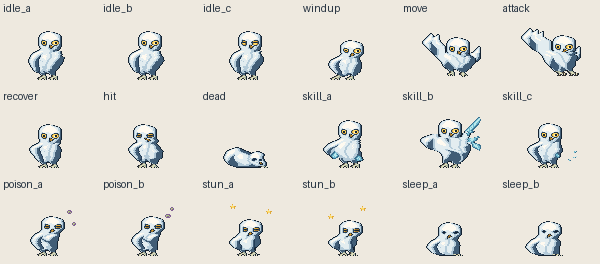
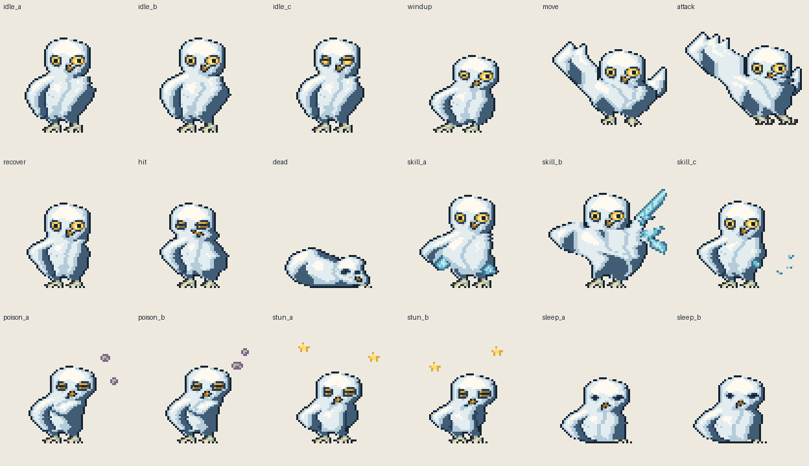
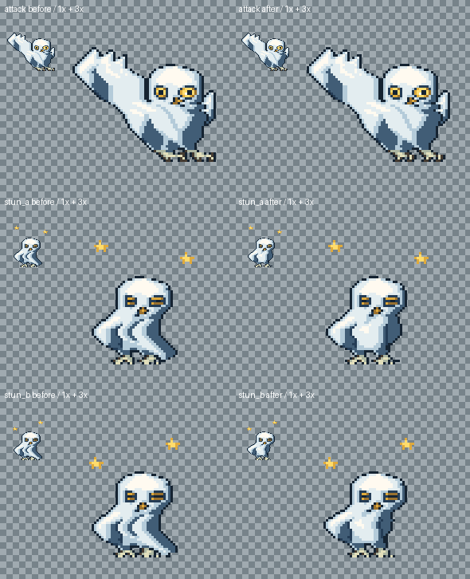

설익부엉이 · fifty-v1
18자세 / native64 / 18색 · 공격 발톱·기절 두 자세 수정 · 독립 재검수 대기
대기240ms · 가슴 숨 / 눈 깜박임
공격웅크림 → 낮은 도약 → 움켜쥔 두 발톱 → 회수
피격눈 감김 / 비대칭 어깨
쓰러짐옆으로 내려온 몸 / 마지막 자세 1000ms
설익진날개 아래 냉기 → 세 얼음 깃털 → 파편
독340ms × 2 · 아픈 목과 독 방울
기절380ms × 2 · 둥근 배 / 짧은 접힌 날개 / 무게 중심 변화 / 금색 별
수면600ms × 2 · 앉아 웅크린 숨
원본 크기와 확대 시트


공격·기절 수정 전후
